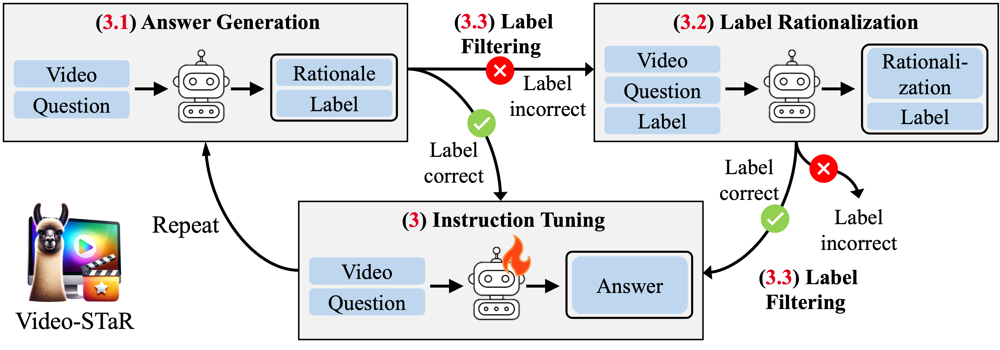
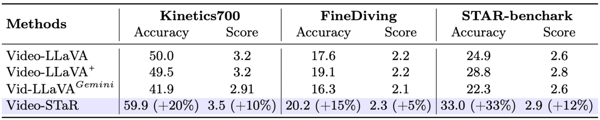
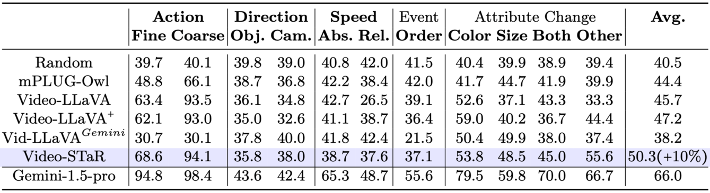

Video-STaR introduces a novel self-training approach for video instruction tuning, leveraging labeled video datasets to enhance Large Vision Language Models (LVLMs). By iteratively generating and filtering answers containing the correct video labels, Video-STaR improves general video understanding and adapts LVLMs to new tasks. Our results show significant performance gains in video QA and downstream tasks, demonstrating the effectiveness of Video-STaR in utilizing existing video labels as weak supervision.

(3.1) We initialize by prompting a large vision-language model to generate an answer for a particular video. (3.3) We then filter the generated answers to those only containing the original video labels. video. We then filter the data utilizing the corresponding video label.
(3.2) The videos whose generated answer did not contain the ground-truth labels are then sent to label rationalization, where given the video, question, and label - the model is expected to rationalize the label. (3.3) The generated answers are filtered again to those only containing the ground-truth labels, and
(3) the large vision language is instruction-tuned from the pre-trained checkpoint on the resulting dataset. The cycle is then repeated.


@inproceedings{zohar2024videostar,
title = {Video-STaR: Self-Training Enables Video Instruction Tuning with Any Supervision},
author = {Zohar, Orr and Wang, Xiaohan and Bitton, Yonatan and Szpektor, Idan and Yeung-Levy, Serena},
year = {2024},
booktitle = {arXiv preprint arXiv:2407.06189},
}